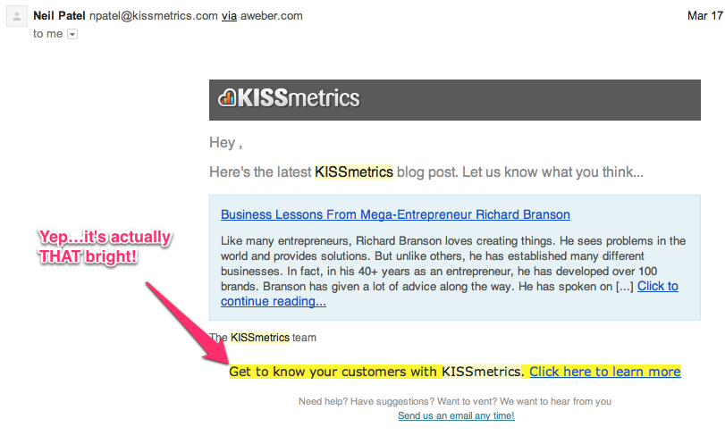

Email marketing is a longterm strategy but that doesn’t mean there aren’t opportunities to hack the growth of your list and the effectiveness of your emails. Here are 15 proven ways to get better at email marketing fast.
1. Collect email address everywhere, even on Twitter
Of course you have a form on your blog to collect email addresses but don’t stop there!
There are all kinds of ways to use pop-up forms and interstitial ads to ask people to subscribe to your list but there are more creative ways to bring people onboard too. Twitter, for example, is a very cool way to collect email addresses. All you need to do is create a Lead Generation Card and you can start collecting email addresses for free.
We got this idea on the Zapier blog, where Danny Schreiber explains the process in detail:
“By simply including a link within my tweet, the card is embedded, giving users the ability to subscribe to my email list with a single click. It’s beautifully simple,” Ryan writes on his blog.
Ryan’s conversion rate after a few weeks: 60-80%

We created a guide to getting this set up, which you can check out here.
2. Send someone else’s content
Here’s a quick way to assess the quality of your email marketing: Are you willing to send your subscribers someone else’s content? If you answered “yes”, your marketing has a much better chance of being effective because it means you genuinely care about your subscribers.
You should be willing to send your list someone else’s content and here’s why:
- Your email subscribers want great content. This is an easy way to give it to them.
- You want people to know that their well-being is your priority. This is the perfect way to prove it.
- Writing great content is hard. You don’t always have time to create something great.
- This is a great way to build rapport with other sites.
We did this recently using Danny Schreiber’s post about creative ways to grow your email list that we mentioned above. Our readers loved it.

3. Give people a reason to forward your email
Harry’s, the men’s grooming brand, launched last year with almost 100,000 email addresses in their database. How did they do that? They encouraged sharing via referrals. Harry’s co-founder Jeff Raider explained the process, including the templates and code they used, in a recent post on Tim Ferriss’ blog:
The user interface of the campaign was relatively simple – a two-page microsite.
First, users entered their email addresses on a splash page. This first step was essential since we wanted to capture emails both for our list and so that we could use it as an identifier for tracking referrals.
The second page was where the referral mechanisms lived. It contained a shareable link to the splash page coded specifically to the user. Below the link were buttons to share the link through email, Facebook and Twitter with the click of a mouse. By sharing the link with friends, users had the opportunity to earn free product. The more friends who signed up using your unique referral link, the bigger the prize you earned.

It’s worth reading the whole post – How to Gather 100,000 Emails in One Week – for more details on the logistics and the technical stuff. Incentives work … put them to good use.
4. Use social proof
Before we dive into this one, here’s a definition courtesy of Ed Hallen on the Buffer blog:
What is social proof?
Social proof is the concept that people will conform to the actions of others under the assumption that those actions are reflective of the correct behavior.
There are a number of ways email marketers can apply this idea to their work. The first and easiest way to implement social proof is to tell your readers how many people subscribe to your email list.
Buffer does this:

And so does Noah Kagan:

There are lots of ways to incorporate social proof into your marketing. Here are a few ideas:
- Encourage customers to write reviews. No one does this better than Amazon and it’s proven to be one of the most effective ways to drive sales.
- Tell stories that your users and customers can relate to. Authenticity and transparency matter so use content that drives a narrative similar to the one your ideal customers are currently experiencing or would like to experience. Alex Turnbull does a killer job of this with his Journey to $100k a Month blog.
- Be socially active. Use social media and email to be present in your community. Your expertise, and willingness to share it with others, will make others want to join your tribe.
5. Send the best email receipts in the game

Not pretty good receipts, the best receipts.
People love transactional email but so few companies take the time to turn these messages into the powerful marketing vehicles they can be. Twitter co-founder Jack Dorsey went to so far as to call receipts “next publishing medium”.
Here are a few ideas to get more out of your email receipts:
- Make them look good. Email receipts can be beautiful as well as functional. Since most look so bad, it’s easy to stand out.
- Include referral codes to encourage customers to share their experience with others. Uber, for example, will give customers a $20 credit if they refer a new customer and the referral code is built into their receipts.
- Show related products or services. Active.com does a great job with this. When I sign up for a 5k using their service, they let me know about 5k training plans in my receipt. It’s this type of thinking that can really accelerate growth.
Check out our guide to growth hacking with email receipts for more on this topic.
6. Use email retargeting
Instead of guessing what people want, just look at the data you already have. Many marketers have put retargeting to good use with ad networks but your presence in the inbox is much more powerful. There are two ways to do this.
First, you can track what your email subscribers click and show them ads based on that data. Or, you can track logged in users behavior on your site and trigger emails based on their activity. Airbnb has mastered this. When a logged in user views a listing but doesn’t actually rent, Airbnb will trigger an email to that user with more information on the listing as well as nearby rentals in the same price range.
Tommy Walker explains the power of specificity on the ConversionXL blog:
Using the “Email Forking” strategy, you automatically move subscribers to new email lists that are more specific to their interests.
If for example a retail site first email offers “shirts & shoes”, and the subscriber clicks “shoes”, they will be moved to a shoe specific email list, and the “shoes” retargeting ad is triggered.
On the next email, the subscriber will be given a choice between “casual & dress shoes.” When the subscriber clicks dress shoes, now they are moved to the “dress shoes” list while the retargeting ads switch over to display dress shoes over network. The idea is to drill into specific interests and reinforce those click decisions with relevant retargeted advertising.
Remember that while ad networks can be powerful, behavioral email can be the silver bullet that separates you from your competitors.
7. Use buttons

The use of buttons isn’t limited to landing pages. In fact, email marketers can greatly benefit from the use of buttons. Joanna Wiebe from Copyhackers has detailed how and why to use buttons numerous times, so we are going to lean on her expertise.
What should my button say?
A great rule of thumb when writing a call to action is to make your button copy complete this sentence:
I want to ________________
What should my button look like?
- A 3D effect
- A contrasting, non-grey color
- Feedback on hover (e.g., different color)
- Whitespace around it
- An arrow pointing to it with instructional copy
Read way more here and check out Button Generator to create simple buttons you can start using right away.
8. Automate personal messages
Wouldn’t you like every new subscriber or customer to get a personal note from your CEO, customer support rep or account manager? You can, and should, make this happen. In order to make these messages as effective as possible, here are a few tips for automated personal messages.
- Make sure they come from a real person.
- Allow people to reply to them.
- Read and respond to their replies.
- Use plain text.
- Trigger them based on behavior (more on that below).
Personal messages can be effective in welcoming new customers but there are more powerful ways to use them in your onboarding. Here is an actual email that we send after a Vero free trial customer sends their first email with our software.
The more specific you can be, the more personal the message is.
9. Ask people to reply (and actually check your inbox)
If you have a large email list, you are likely getting replies that you never see. It is so important to have a real inbox where replies can be monitored. What if someone just needs one last bit of information before becoming a customer? Or worse, what if someone replies and never hears back, left to assume you don’t care about their needs.
It’s an easily overlooked method for gathering feedback and it’s actually something you should encourage your subscribers to do. Why send them to a form when they could simply reply directly from their inbox? You can easily route responses to your customer support team or even a HelpScout inbox where the right person can be assigned to handle it.
Enabling people to respond to your email can give you valuable feedback about your product or service, improve your customer service and accelerate leads through your conversion funnel.
So move away from this:

And towards this:

It’s a no-brainer.
10. Unsubscribe your customers for them
Uh … what?
You’ve been told over and over how important your email list is to your business: “collect every email you can, at all costs!”
More than a few marketers lost their minds when The Next Web published this email from retailer Fab.com.
This is one of the best email hacks I’ve ever seen.
Why?
Because it’s considerate.
No matter how rational you are, it’s natural to cringe a little whenever a customer unsubscribes. Who could blame you for feeling apprehension that your hard-earned customers are going to unsubscribe en-masse?
At Vero, we are advocates for smarter emails – i.e. send less and make ’em count – but the primary thing you should remember is that there’s no point having people on your list that don’t want your emails.
So why not automatically unsubscribe inactive customers?
You’ll increase the overall value of your active customer list by removing those that never open or click your emails and reduce your risk of ending up in the spam folder, as Pardot explains.
Internet service providers, spam monitors, and email security services all set thresholds for what constitutes an acceptable email campaign. Your spam complaints, undelivered messages, and unsubscribes all need to be under these thresholds to avoid unwanted attention from these groups. Blasting your emails to an unqualified list could result in account suspensions from your email platform, penalties, or even fines, not to mention dismal marketing results.
It’s hard to bite the bullet but it’s a smart strategy in the long run.
11. Put HTML to work in your emails
Email has come a long way over the last 40 years. Thanks to HTML we can now do a lot of interesting things with emails. Putting aside the plain text vs. HTML email debate for a moment, there are many cases where HTML emails rule supreme.
When you are using HTML emails consider every trick you can to maximize your conversions.
Let’s take this email from Amazon:

Depending on which star I click, the page that opens is pre-loaded with that review already started.

I’m more invested since this review is partially done. It’s a simple but effective way to make my life easier.
Another fancy HTML email trick you can use is forms. Take this example from Google:
It features an HTML form inside the body of the email. This is a relatively underused trick and, although it doesn’t work in every email client, it’s a novel way of speeding up feedback that is worth testing. Read way more about this here.
12. Use different “from” addresses to build rapport
How many people work at your company?
One?
I didn’t think so (although, there’s nothing wrong with that!). Businesses are usually made up of at least a few people and each person has a particular role that supports the customers in one way or another.
It goes without saying that you should send email from an actual person. (No more no-reply@business.com … please-reply@business.com would be much more effective!)
The hack here is to try emailing from multiple members of your team. Take Vero’s welcome emails as an example. Setting up Vero involves two real steps:
- Tracking your customers’ behavior (installing Javascript), and
- Writing an awesome email to get started.
Since there is a bit of code involved, some of our emails from our CTO James Lamont:
This has been very effective in our marketing because the emails feel more personal. It’s a nice hack that will not only put you ahead of the ‘no-reply’ crowd but can even give you an edge over less creative marketers.
13. Take your signature to the next level
No copy should be wasted copy.
The footer of your email is a good place to re-iterate a call to action or highlight a message. Customers read things in this section. Rather than hiding your footer in tiny, 8px font, give it some prominence!
Take the weekly blog post updates from KISSmetrics:

The primary call to action is to get you to read the blog but they don’t just sign off with ‘The KISSmetrics team’.
No sir!
They include a massive, fluorescent yellow call to action. I can only imagine that more than a few people click on that bad boy … it’s hard to miss after all.
You can also use a postscript (P.S.) rather than a signature. Direct marketing gurus use this trick all the time. When we wrote about how customers actually read emails I mentioned the top three things you should remember when using the PS to re-iterate your call to action:
- Testimonials: add social proof to your call to action with a quote in the PS.
- Bonuses: give customers something extra to push them over the line.
- Be personal: treat the PS like you’re writing a letter: make a personal connection with your customers.
Hotmail famously used this strategy in the late 1990s to explode from a relative nobody to a $400 million company in 18 months.
As a way to stimulate growth, the Hotmail team added the intriguing bit of text “PS I love you” at the bottom of every email they sent, with a link back to their homepage. In less than a year, this little piece of content was responsible (in part) for their massive growth of more than 12 million email accounts.
Signatures and postscripts are low-hanging fruits with massive potential. Be sure to include them in your marketing and your personal email.
14. Make everything dynamic
It’s easy to spend a lot of time optimizing the body of your content but it’s worth thinking about the periphery as well. Like the signature mentioned above, most emails contain multiple elements that you can play with. Each of these is an opportunity in disguise.
Take this email from Net-a-Porter. In my experience these top menu items never change – but think of all the things Net-a-Porter could do…
Without going too crazy, you could easily customize different menu items depending on what actions a customer has taken.
Perhaps an email sent to customers who have purchased three times or more contains a link to’Secret Pre-Launch Items’ while an email to a customer who has never purchased contains a link to’Sale Items‘.
This sort of simple segmentation follows really successful segmentation strategies used by big brands. Check out this post on increasing customer lifetime value with email segmentation for more details.
Ever a good example, Amazon takes every chance it can get to make your emails dynamic. They watch everything you do and include images, links and offers that are really dynamic.
15. Don’t quit
This is the most important email marketing tip you will ever read.
Quitting too soon is the #1 reason people fail at content and email marketing. You have to stay in the game long enough to earn trust, become a true expert and find a tribe that’s willing to buy, buy and buy again. It’s really hard and it can take a long time. The hacks listed above will help you get there faster but expect the road to success to be a bumpy one.
This image tells you everything you need to know.
Have a great email hack that we missed? Let us know in the comments.